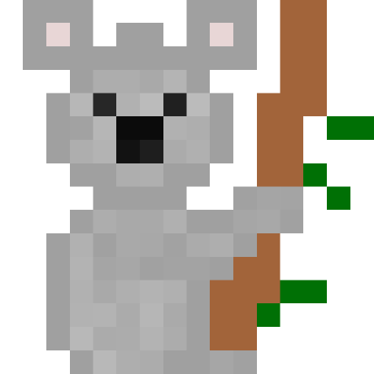

class: slide-intro ## The awesome syntax checking plugin for vim ``` It's a bird! It's a plane! ZOMG It's ... _____ __ __ _ / ___/__ ______ / /_____ ______/ /_(_)____ \__ \/ / / / __ \/ __/ __ `/ ___/ __/ / ___/ ___/ / /_/ / / / / /_/ /_/ (__ ) /_/ / /__ /____/\__, /_/ /_/\__/\__,_/____/\__/_/\___/ /____/ ``` > [github.com/scrooloose/syntastic](https://github.com/scrooloose/syntastic) --- class: content-centered whoami # Who am I? <div class="whoami--pixelastic"> Timothée Carry, <a href="https://twitter.com/pixelastic">@pixelastic</a> </div> <div class="whoami--algolia"> <p>Fullstack Craftsman at</p> <a href="https://www.algolia.com/"></a> </div> --- class: slide-intro # Linter? --- ## > basic syntax issues  --- ## > improvements  --- ## > styleguide  --- # CI is asynchronous...    --- # Instant feedback  --- ## Awesome for new languages ### 1. Personal teacher ### 2. Learn faster ### 3. Best practices --- ## Languages ActionScript, Ada, Ansible configurations, API Blueprint, AppleScript, AsciiDoc, ASM, BEMHTML, Bro, Bourne shell, C, C++, C#, Cabal, Chef, CoffeeScript, Coco, Coq, CSS, Cucumber, CUDA, D, Dart, DocBook, Dockerfile, Dust, Elixir, Erlang, eRuby, Fortran, Gentoo metadata, GLSL, Go, Haml, Haskell, Haxe, Handlebars, HSS, HTML, Jade, Java, JavaScript, JSON, JSX, LESS, Lex, Limbo, LISP, LLVM intermediate language, Lua, Markdown, MATLAB, Mercury, NASM, Nix, Objective-C, Objective-C++, OCaml, Perl, Perl POD, PHP, gettext Portable Object, OS X and iOS property lists, Puppet, Python, QML, R, Racket, Relax NG, reStructuredText, RPM spec, Ruby, SASS/SCSS, Scala, Slim, SML, Sphinx, SQL, Stylus, Tcl, TeX, Texinfo, Twig, TypeScript, Vala, Verilog, VHDL, VimL, xHtml, XML, XSLT, XQuery, YACC, YAML, z80, Zope page templates, and zsh. --- ## Easy to setup #### 1. github.com/scrooloose/syntastic #### 2. linter in `$PATH` #### 3. opt-in / opt-out --- ## Easy to contribute #### [Recess](https://twitter.github.io/recess/) (SCSS Styleguide) #### [Flog](https://github.com/seattlerb/flog) (Ruby complexity) #### [Stylelint](https://github.com/stylelint/stylelint) (CSS Styleguide) #### [Dockerfile_lint](https://github.com/projectatomic/dockerfile_lint) (Dockerfile syntax & best practices) --- ## Need parsable output   --- # Takeaways <div class="takeaways--item"> <img src="./img/eslint.png" /> <a href="https://github.com/eslint/eslint">Eslint (JavaScript)</a> </div> <div class="takeaways--item"> <img src="./img/rubocop.png" /> <a href="https://github.com/bbatsov/rubocop">Rubocop (Ruby)</a> </div> <div class="takeaways--item">  <a href="https://github.com/koalaman/shellcheck">ShellCheck (Shell)</a> </div> <div class="takeaways--item"> <a href="http://www.pylint.org/">Pylint (Python)</a> </div> --- class: slide-questions, content-centered # Questions ? <div class="contact"> <div class="part part-below part-mail" name="email">tim@<div class="part part-above part-website" name="website"><div class="part part-below part-twitter" name="twitter">pixelastic</div>.com</div></div> </div>